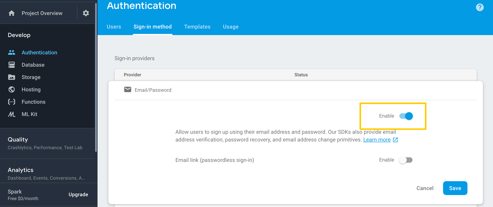

Back to Main Docs
© Copyright 2019 - Enlite Prime
All this guide in this documentation get from https://firebase.google.com/docs/guides
Get API Key
Before you can add Firebase to your JavaScript app, you need to create a Firebase project to connect to your app.
- Sign into Firebase using your Google account.
- Add new projects
-
Enter your project name.
- Click Create Project.
- You're project has been create.
-
Open
/.firebasercPut you're project ID{ "projects": { "default": "projectID" } } - Next, click the Settings icon
 , then select Project settings.
, then select Project settings. -
In the Your apps card, click the web icon platform

-
Then add Firebase to your web app
-
Enter App nickname
- Click Register App
-
Enter App nickname
- Back to Your apps card, and choose you're recently created app
-
Then copy the you're config script
- Paste in
app/firebase/config.js
Setup Authentication
You can use Firebase Authentication to allow users to sign in to your app using one or more sign-in methods, including email address and password sign-in, and federated identity providers such as Google Sign-in and Twitter Login.
Enable Sign In with Email
- In the Firebase console, open the Auth section. 
- Go to Sign in method tab
- Enable the Email/Password provider. Note that email/password sign-in must be enabled to use email link sign-in.
- Click Save.
Enable Sign In with Google
- In the Firebase console, open the Auth section.
- On the Sign in method tab, enable the Google sign-in methodand click Save.
Enable Sign In with Twitter
A. Register You're App
- Go to Twitter app's config. And sign in with you're twitter account
- Click Create an app
- Enter all require field
- Website URL (required): Enter you're Firebase authDomain e.g.
mypoject-1234a.firebaseapp.com - Click Create
- Back to Twitter app's config.
- Click Details to you're project
- Go to Tab Keys and Tokens
- Copy the Consumer API keys both API key and API secret key
B. Firebase Config
- Open Firebase Console
- Go to Authentication › Sign In Method › Twitter
- On the Sign in method tab, enable the Twitter sign-in method and specify the API Key and API Secret you got from Twitter.
- Paste twitter API key to API key field and API secret key to API secret field
- Click Save.
-
Then, copy your Firebase redirect URL (e.g.
my-app-12345.firebaseapp.com/__/auth/handler) is set as your Callback URL in your app's settings page on your Twitter app's config. - Back to Twitter app's config
- Click Details to you're project then Edit details
- Check Enable Sign in with Twitter
-
And paste the Callback URLs field: with callback URL from Firebase (e.g.
my-app-12345.firebaseapp.com/__/auth/handler)is set as your Callback URL in your app's settings page on your twitter setting - Click Save.
- it's done. You can try to test sign in twitter in http://localhost:3001/login
Enable Sign In with Github
A. Register You're App
- Open Firebase Console
- Go to Authentication › Sign In Method › Github
- On the Sign in method tab, enable the Github sign-in method
-
Then, copy your Firebase redirect URL (e.g.
my-app-12345.firebaseapp.com/__/auth/handler) is set as your Callback URL in your app's settings page on your Twitter app's config. - Click Save.
- Go to Github developer config. And sign in with you're github account
- Click New OAuth App
-
Enter all require field

- Homepage URL (required): Enter you're Firebase authDomain e.g.
mypoject-1234a.firebaseapp.com -
And paste the Authorization callback URL field: with callback URL from Firebase (e.g.
my-app-12345.firebaseapp.com/__/auth/handler) is set as your Callback URL in your app's settings page on your github setting - Click Register Application
- Back to Github Developers Settings.
- Click you're project
- Copy both Client ID and Client Secret
B. Firebase Config
- Back to Firebase Console
- Go to Authentication › Sign In Method › Github
- Paste Github Client ID to Client ID field and Client Secret to Client Secret field
- Click Save.
- it's done. You can try to test sign in github in http://localhost:3001/login
Real Time Database
To use Pre-build CRUD apps you need to setup Firebase Database and Store. The Firebase Realtime Database is a cloud-hosted database. Data is stored as JSON and synchronized in realtime to every connected client.
- Sign into Firebase using your Google account.
- Go to Database section
- Click Create Database
- On the Top Drop down Database choose Realtime Database
- Go to Rules tab. To use demo Pre-build CRUD apps you need to allow all of rulles access. Later you should arrange the rules acces as you need.
- Open
app/firabse.json. Copy all the script - Then paste in Rules Editor
- Click Publish
- Check our pre-build CRUD app i.e. To Do http://localhost:3000/app/pages/todo-firebase
Storage
In this template Storage used for upload avatar images in Contact Apps. The upload function itself you can check in
/app/containers/SampleFullstackApps/Contact/helpers/uploadImg.js
Here's the step to setup storage.
- Go to Storage section
- Click Get Started
- Got to Rules tab. To use demo Pre-build CRUD apps you need to allow all of rulles access. Later you should arrange the rules acces as you need.
-
Then change the rules in editor like this
service firebase.storage { match /b/{bucket}/o { match /{allPaths=**} { allow read, write; } } } - Check our pre-build Contact Apps http://localhost:3000/app/pages/contact-firebase
Sample Dump Data
This is an example dummy data to be imported to database. In case you want to see Pre=Buil CRUD Apps with filled data.
- Sign into Firebase using your Google account.
- Go to Database section
- Choose Realtime Database
- Go to Data tab.
- Click more icon menu on right top
- Choose import JSON
- Then choose
/dump_data/enlite-3a841-export.json - Check our pre-build CRUD app i.e. To Do http://localhost:3000/app/pages/todo-firebase